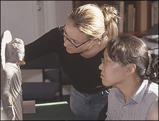

|
|
NewsDiploma in Asian Art
View the course prospectus and application form.  Course brochure
(pdf format 554kb) |

"With a professional background in international trade and international trade finance, including service as a Canadian diplomat, I was thrilled to finally have the time to address a long-standing interest in Asian art. I found the British Museum programme to offer a unique learning experience which through its flexibility allows a very diverse student group to realize often different goals. During an intensive twelve weeks one is presented with a full survey of the relevant art history focused on one area, and encouraged to explore topics of individual interest. The resources at one's disposal are world class: in the lecturers who are internationally recognized experts; in the objects that one views and, in some cases, handles; and in the library facilities one can access. All this is enhanced by one's fellow students who are of all ages, nationalities and professional and academic backgrounds. I can't imagine a more rewarding learning experience. It met and exceeded all expectations." Anne H. Whetham
" After working for large international companies such as Josiah Wedgwood and The Body Shop in buying and marketing, I decided to take a career break. The British Museum Diploma was a personal indulgence to satisfy my curiosity about my Chinese roots and culture within the context of art history. The major benefit of the Diploma is hands on experience in handling museum, auction house and private collections. Students are taught by leading specialists and are encouraged to use the opportunity to network. In addition, students are encouraged to explore areas for further research. Having worked in the ceramic industry, my love is Chinese ceramic, but the inspiration of the lecturers has also kindled a deep interest in Buddhist art. When I started the Diploma I automatically assumed that I would pursue a career in the dealing world by combining my commercial skills with my new found knowledge of art history. However, I have discovered that dealing is just one of the many career avenues I can pursue. It is not just what you learn on the course but whom you meet. Both gave me the inspiration to look at different areas for personal and professional development." Gillian Todd
"I found the Islamic art module of the British Museum Diploma in Asian Art fascinating. My background is in the legal profession and before starting the course I worked for 6 years as a solicitor in the City. I first became interested in Asian art during a professional placement in Hong Kong as part of my legal training. The Islamic module follows the historical development of the Islamic regions and their ruling dynasties. It explores the varied art forms of the Islamic lands from the rise of the Islamic faith following the death of the Prophet Muhammad in the seventh century to the modern age. Topics covered include architecture, calligraphy, miniature painting, ceramics, metalwork, carpets and textiles. The standard of lecturing on the course is outstanding with classes being given by world renowned experts who lecture worldwide. I consider the contribution of Dr Sabiha al Khemir, the Course Tutor, to be one of the course's principal assets. She lectures on the course and provides weekly review sessions and one-on-one tutorials. Her lectures are highly informative and delivered with a passion and unique insight into this fascinating field. The highlight of the module was a three day trip to Paris lead by Dr al Khemir to the Paris mosque and the Islamic collections at the Louvre and the Institute du Monde Arabe. I would strongly recommend the Islamic module to students considering pursuing the Asian Art Diploma." Anna O'Connell
"What is Islamic Art? How can you do an art history course when 'everyone knows' that Islam 'forbids' representations of living beings? You won't be looking at any paintings then will you? And if there are no paintings, what 'art' are you actually studying? I've lost track of the number of times I was asked such questions by friends and family as I began my studies! At the outset, I decided not to answer them. I wasn't being deliberately rude or evasive. Simply that I wanted to keep my mind open. To really allow whatever I may see, hear, touch and learn about to be as fresh, challenging and exciting as I could allow. To let whatever I 'thought' I knew about the religion, the people, the countries, the culture be turned upside down. It's never easy keeping an open mind … after all, 'everyone knows' we all have our own peculiar prejudices, cultural bias, experience. If, like me, you're also one of the more 'mature' students on a course, you probably also have a somewhat larger inventory of baggage to bring with you! But, if you can find somewhere to store your mental luggage for 12 weeks, I guarantee you'll begin a genuinely fascinating journey. As you hunt that elusive knowledge you'll be in good company, well guided, well supported. One of your first guides will instantly challenge some stereotypes about Islam and its art. Dr al Khemir is a renowned Islamic art historian, a published author and illustrator, a motivational lecturer and an eloquent and passionate speaker. She is also a Muslim Arab woman. But, it is her inexhaustible ability to find connections between East and West, her generous spirit and charm, her own questioning intellect that inspired us to break through whatever blocks we had and really enter the spirit of learning.
Christine Sharp
"After 20 years in the high technology business, I was seeking a new direction. The British Museum course opened up a whole new world for me. The combination of world class instructors, the ability to handle objects from the Museum collection, and the chance to work with other students interested in the same topic provided a great learning experience. I'm now seeking ways to turn it into a new career." Sharon Studer
"The Classical and Decorative Arts of China module from the British Museum Diploma in Asian Art course provided a comprehensive cultural survey of Chinese art and archaeology. Highlights included bronzes, ceramics, jade, and painting. As an American expatriate with a retail buying and interior design background, the course provided a solid foundation in Chinese art history and expanded knowledge in specialized categories. This interaction with the foremost Chinese art experts in Great Britain from the museum, academic, and commercial communities and with fellow students, who included museum board members, Asian Art dealers, and collectors, inspired me to pursue a MA in Art and Archaeology, specializing in Chinese ceramics, at the School of Oriental and African Studies at University College London." Parul Agawal Desai
"I found the Islamic module mentally stimulating and highly enjoyable. The course was well structured and the input was of a very high standard. The lecturers provided wide ranging perspectives while maintaining and ensuring clarity, continuity and a coherent framework for study. The course also made one aware of the common thread that runs through the art of seemingly different cultures. It was also interesting to see how different cultures and people of different cultural origin manifest their love for God and how the same motif was given different and similar attributions by different people. After each lecture there was always room for discussion and questions and the interaction between the lecturer and students was very high. It is no doubt a demanding course but the students are well supported by the tutors. The revision sessions at the end of each week were useful. What I liked most about the course was its sensitivity to students from different cultures. The course also addressed crucial albeit sensitive issues such as representational art in Islam. It also dealt with sects of Islam that although do not form part of mainstream Islam today have, nevertheless, contributed greatly in the past and today to its historical and doctrinal development. The output of the course was quite phenomenal. By the end of the course it was possible for a student to walk into an Islamic gallery, be it at the British Museum, Ashmolean or at the Louvre, and place the artifacts into their historical context. I feel it is this more than anything else that speaks for the high standard of the course." Farhana Shehabuddin
"For many years I had been interesed in China, its history and arts as a result of working in Hong Kong in the late 70s/early 80s. The three month course was a great early retirement project - which rapidly showed me both how little I knew before, and just how interesting the topic was - with the terrific range of lecturers, the agreeable other attendees and the opportunities it gave of direct contact with many of the artifacts we learned about. It opened a window on a world that had been completely unapparent to someone who had previously led a very focussed life as a City lawyer." Charles Allen-Jones
"I found the Islamic art diploma a unique and truly enriching experience; more vivid, more vital - more joyous! - than my previous university degrees. Our small eclectic group began the module with little to no knowledge of Islamic art and culture, and over the allotted 13 weeks we learnt an astonishing amount. We were taught by a great breadth of scholars and specialists, each with a genuine love and enthusiasm for their subject, and each eager to share and communicate that passion with the students. We travelled to Paris and around the UK to view public and private Islamic art collections. We handled pieces of Islamic art, feeling their weight or delicacy, their coolness and texture; we 'connected' with objects that, without the course, we would only have glanced at in the cold, 2-dimensionality of books, or behind the glass of museum cabinets. I felt the great gift that the course gave us was a language, both visual and conceptual, that allowed us to see in carpets, calligraphy, ceramics, manuscripts that which we had previously been blind. Under the close personal supervision of our course tutors we began to appreciate the vibrant wealth of history, culture, philosophy, and art that resonate from Islamic art pieces. Fiona Buckee
|
 Bronze figure of the Buddha Amitabha, from Silla, Korea 7th - 8th century AD |
|||
|
home |
visit |
what's on |
join |
shop |
learning |
COMPASS |
world cultures |
sitemap |
contact us |
copyright
© The British Museum, 2002 |
|||||